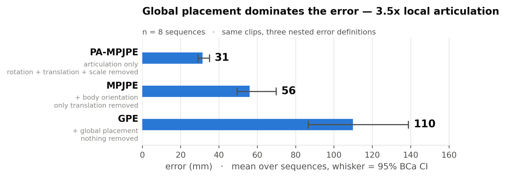
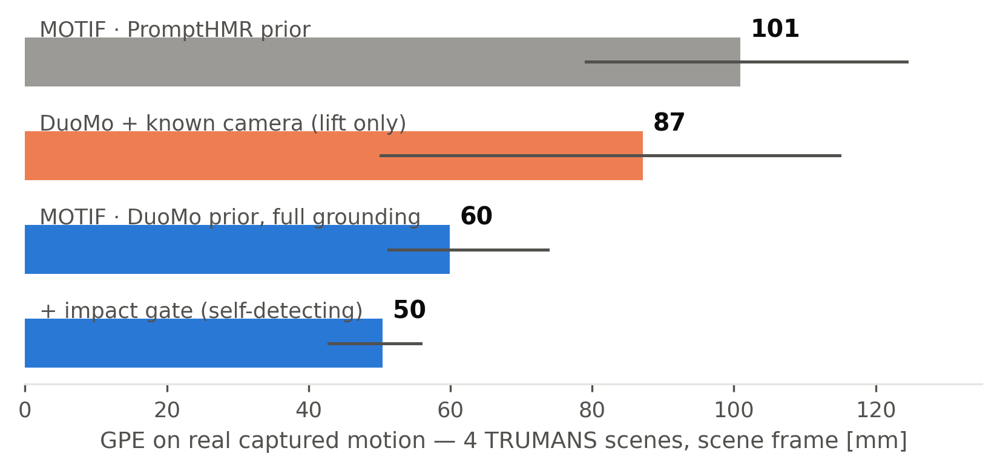
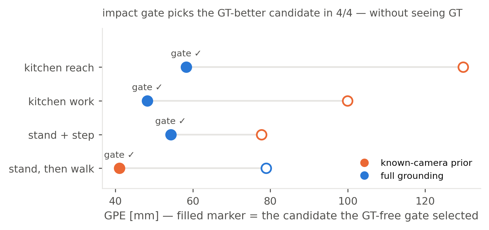
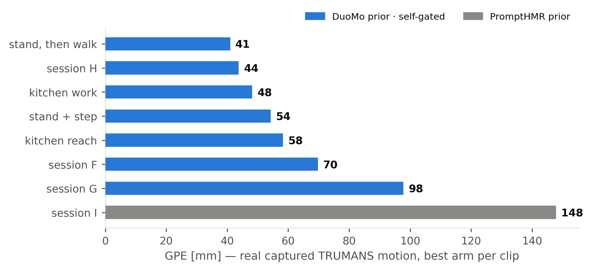
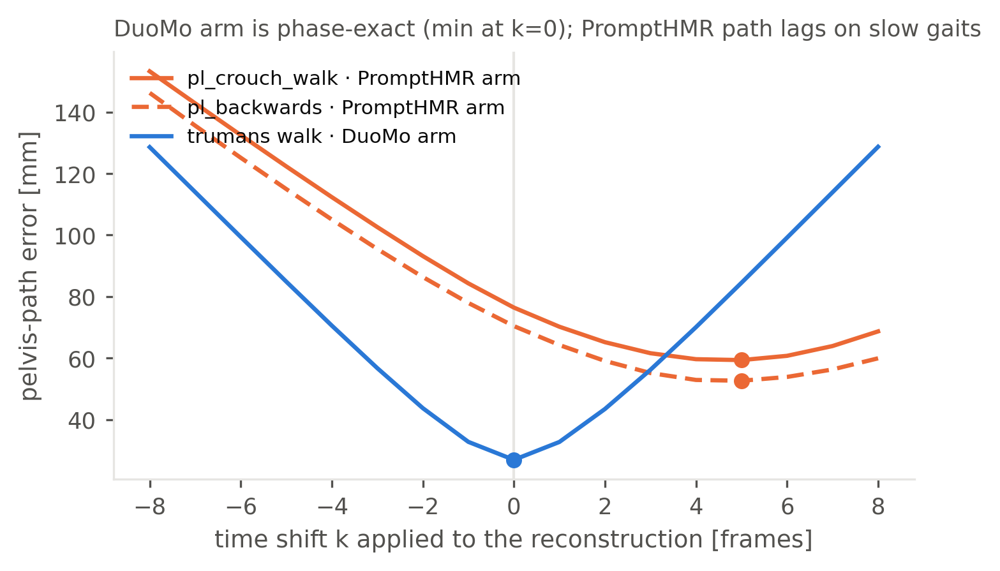

MOTIF · Motion from Imagined Footage
The stage is authored, the camera is known — so generated motion can be measured.
A prompt becomes a video, the video becomes a body, and the body lands back in the 3D scene it was filmed in — in metres, editable in Blender. In every clip below, orange is ground truth and blue is the reconstruction.
41 mm
best world error on real captured motion (TRUMANS)
50 mm
mean, best pipeline arm, 4 real-capture scenes [43, 56]
31→56→110
error cascade PA → MPJPE → GPE, procedural corpus (n=8)
4/4
self-gate picks the truer arm — without seeing ground truth
Hero — real captured motion, reconstructed through the authored camera
Orbit — 41 mm world error. reconstruction (blue) vs ground truth (orange ghost) · TRUMANS stand-then-walk
Showreel
All benchmark clips, 2:08. input video (known camera) | GT vs reconstruction in the authored scene
Four authored worlds — Veo clip in, metric body out
Toon bedroom — wave
Spaceship cockpit — balance brace
Mediterranean kitchen — chef victory
Packing studio — raise arms
Toon bedroom — walk & sit on the bed
Toon bedroom — walk door → rug new batch
Toon bedroom — crouch at the toys new batch
Measured against known truth — real captured motion (TRUMANS)
Stand, then walk — GPE 41 mm
Session H — GPE 44 mm
Kitchen work — GPE 48 mm
Grounding step in the scene working cut
Procedural corpus & details
Dance, in place — GPE 64 mm
Slalom walk — GPE 98 mm
Slalom orbit
Hand articulation graft — 4 tracking angles WiLoR fingers, wrist from body track
Figures




